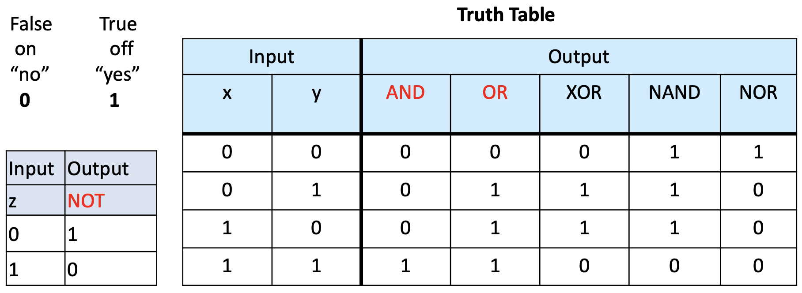
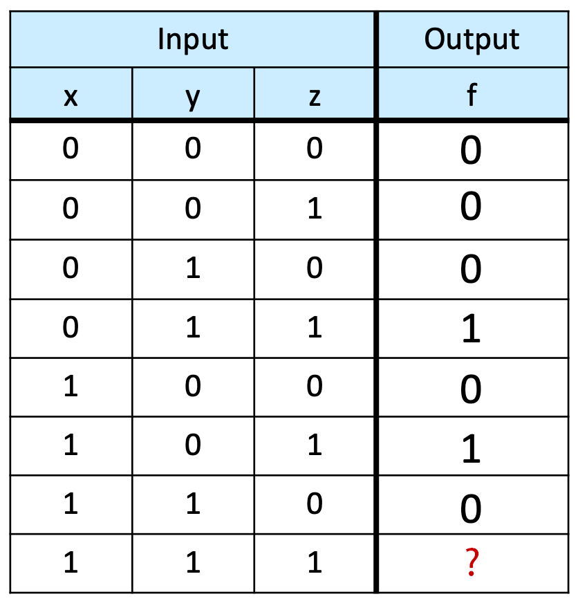
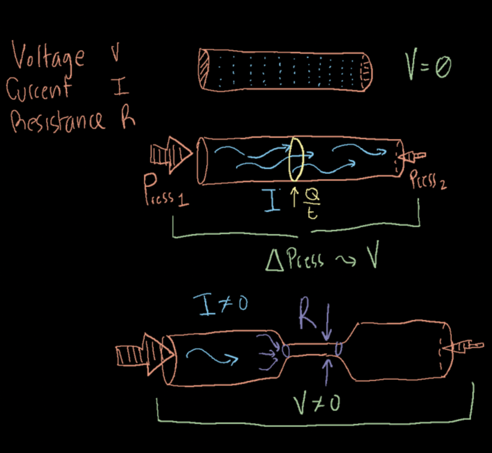
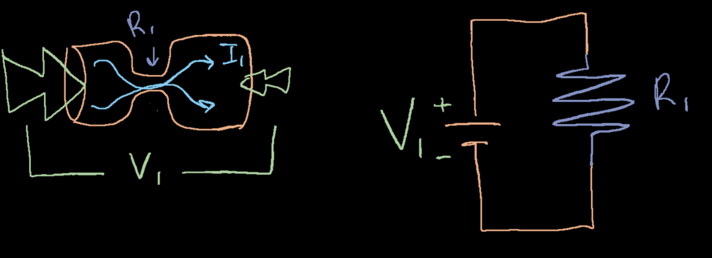

Lecture Notes 03:
Content in Binary and Boolean Logic
Outline
This class we'll discuss:
- Review: Binary and its operations
- More binary operators
- Representing objects using binary
- Boolean Logic
 For now, we're looking at the "what?" not the "how?"
For now, we're looking at the "what?" not the "how?"
Review: Binary and its operations
First, a reminder of the decimal positional system
The following shows the "value of each place" for the decimal system and the digits
2,510,709,364 :
| multiplier: |
2 |
5 |
1 |
0 |
7 |
0 |
9 |
3 |
6 |
4 |
| place: |
1,000,000,000 |
100,000,000 |
10,000,000 |
1,000,000 |
100,000 |
10,000 |
1,000 |
100 |
10 |
1 |
This can be rewritten using "power" notation (note that the exponents change once when moving positions to the left):
| multiplier: |
2 |
5 |
1 |
0 |
7 |
0 |
9 |
3 |
6 |
4 |
| place: |
\(10^9\) |
\(10^8\) |
\(10^7\) |
\(10^6\) |
\(10^5\) |
\(10^4\) |
\(10^3\) |
\(10^2\) |
\(10^1\) |
\(10^0\) |
Now, an example of the binary positional system
The following shows the "value of each place" for the decimal system and the digits
1101011101 :
| multiplier: |
1 |
0 |
1 |
1 |
1 |
0 |
1 |
0 |
1 |
1 |
| place: |
512 |
256 |
128 |
64 |
32 |
16 |
8 |
4 |
2 |
1 |
This can be rewritten using "power" notation (note that the exponents change once when moving positions to the left)
The only changes are:
- the "base" for each opsition is now 2 (instead of 10)
- we're on;y allowed to use the multipliers: 1 and 0
| multiplier: |
1 |
0 |
1 |
1 |
1 |
0 |
1 |
0 |
1 |
1 |
| place: |
\(2^9\) |
\(2^8\) |
\(2^7\) |
\(2^6\) |
\(2^5\) |
\(2^4\) |
\(2^3\) |
\(2^2\) |
\(2^1\) |
\(2^0\) |
Converting binary to decimal
You just add the "position" values that we use! (those that have a multiplier of 1).
Converting decimal to binary
Follow these steps:
- find the largest position value that fits in the decimal number \(N\)
- assign a multiplier of 1 to that position
- subtract the position value from \(N\) to obtain the remainder \(r\)
- make \(N \leftarrow r\)
- repeat the operation until \(r\) is 0
Example:
if \(N = 88\), the steps are:
\[
\begin{alignat}{2}
&1. \texttt{ The largest position value that fits 88 is 64 (exponent is 6} \\
&2. \texttt{ The current binary number is: } 1_6 \sqcup_5 \sqcup_4 \sqcup_3 \sqcup_2 \sqcup_1 \sqcup_0 \\
&3. \texttt{ The remainder is: } 88 - 64 = 24 \\
&4. \texttt{ The next number $N$ is: } 24 \\
&1. \texttt{ The largest position value that fits 24 is 16 (exponent is 4)} \\
&2. \texttt{ The current binary number is: } 1_6 0_5 1_4 \sqcup_3 \sqcup_2 \sqcup_1 \sqcup_0 \\
&3. \texttt{ The remainder is: } 24 - 16 = 8 \\
&4. \texttt{ The next number $N$ is: } 8 \\
&1. \texttt{ The largest position value that fits 8 is 8 (exponent is 3)} \\
&2. \texttt{ The current binary number is: } 1_6 0_5 1_4 1_3 \sqcup_2 \sqcup_1 \sqcup_0 \\
&3. \texttt{ The remainder is: } 8 - 8 = 0 \\
&4. \texttt{ Since $r=0$ all other multipliers are 0s } 1_6 0_5 1_4 1_3 0_2 0_1 0_0
\end{alignat}
\]
Final number:
0b1011000
We can do all sorts of arithmetic ( \( +,-,*,\backslash \) ) operations.
For quick transformations, use
bitwiseCmd
Logical Operators
Logical operations refer to operations on variables that can contain truth values: true and false, usually denoted 1 and 0, respectively.
Think of these as operations on the "truth-value of a statement".
NOT
NOT is an operation that can be applied to a single bit; since the operation applies to a "single" operand,
it is called a
unary operation.
When
NOT is applied to a single bit (lets call it
p), we can get the following table:
 Note that we're labeling on the outside for clarity, but the label refers to the interior of each circle
Note that we're labeling on the outside for clarity, but the label refers to the interior of each circle
Note that, if \(p\) denotes the operand, \(\text{NOT } p\) can be written as \(\sim p\), \(\neg p\), \(\bar{p}\) or even \(!p\).
OR
OR (AKA: the disjunction operator) is an operation that is applied to pairs of operands,
it is called a
binary operation.
it is true if any of its operands is true.
| p |
q |
p OR q |
| 0 |
0 |
0 |
| 0 |
1 |
1 |
| 1 |
0 |
1 |
| 1 |
1 |
1 |

Note: other symbols you might see are: \( p\lor q \text{, } p+ q \text{, } p\mid q \).
AND
AND (AKA: the conjunction operator) is a
binary operator;
it is true if and only if both of its operands are true.
We can show the effect of this operator using a table:
| p |
q |
p AND q |
| 0 |
0 |
0 |
| 0 |
1 |
0 |
| 1 |
0 |
0 |
| 1 |
1 |
1 |
 Note that we're labeling on the outside for clarity, but the label refers to the interior of each circle
Note that we're labeling on the outside for clarity, but the label refers to the interior of each circle
Note: other symbols you might see are: \( p \wedge q \text{, } p\cdot q \text{, } p\&q \).
Examples
Activity 10 [Group: 1 minute (if we have time)]:
What is the result of the following assertions (what do they depend on?):
- I will go play tennis if it is sunny AND I finish grading;
- I will go play tennis if it is mountain day OR I finish grading;
- I will go play tennis if it is NOT raining;
It turns out that AND, OR, and NOT are necessary and sufficient to implement
any boolean function.
More Logical Operations
Two additional logical operations to check are: XOR and NAND.
NOR
NOR is the negative or negated OR.
We can show the effect of this operator using a table:
| p |
q |
p NOR q |
| 0 |
0 |
1 |
| 0 |
1 |
0 |
| 1 |
0 |
0 |
| 1 |
1 |
0 |
XOR
XOR (AKA: the exclusive disjunction operator) is a
binary operator;
it is true if its operands are different.
We can show the effect of this operator using a table:
| p |
q |
p XOR q |
| 0 |
0 |
0 |
| 0 |
1 |
1 |
| 1 |
0 |
1 |
| 1 |
1 |
0 |

Note: other symbols you might see are: \( p \nleftrightarrow q \text{, } p\oplus q \text{, } p\veebar q \text{, } p\not\equiv q \).
NAND
NAND is the negated AND operator.
We can show the effect of this operator using a table:
| p |
q |
p NAND q |
| 0 |
0 |
1 |
| 0 |
1 |
1 |
| 1 |
0 |
1 |
| 1 |
1 |
0 |
 Note that we're labeling on the outside for clarity, but the label refers to the interior of each circle
Note that we're labeling on the outside for clarity, but the label refers to the interior of each circle
What else can we represent with bits?
- A yes/no piece of information (Also called a Boolean value) \(\checkmark\)
- numbers \(\checkmark\)
- letters \(?\)
- images \(?\)
- sound \(?\)
- video \(?\)
Let's do images first.
Storing Images
Activity 1 :[2 minutes] : How would you store an image in a computer?
One possible answer:
(Wait; then Click)
Which could be saved as a series of 0s and 1s in memory.
An example is shown below:

How would you store color images?!!!
(Wait; then Click)

We would keep three different "grids" of values, one for each channel.
Storing letters
Activity 2 :[2 minutes] : How would you store a letter in a computer?
One possible answer:
(Wait; then Click)
Is this a good idea?

So, how would you do it?
(Wait; then Click)

(from https://theasciicode.com.ar/)
Note: It's ONLY when we need to print them to a screen (or paper) that the numbers must be converted to shapes.
in the meantime, the computer just needs to know Oh!, this number is to be treated as a letter!.
What do you notice about the storage approach?
How many bits do we need?
Storing Video
Activity 3 :[2 minutes] : How would you store video?
(Wait; then Click)
Multiple images would do the trick.
Note that, for better compression, you could simply store the "changes between frames".
Storing Sound
Activity 4 :[2 minutes] : How would you store sound?
(Wait; then Click)
You could store notes!
In physics-terms, that means we just need to store the frequencies and their duration.
Excellent example here
What else can we represent with bits?
- A yes/no piece of information (Also called a Boolean value) \(\checkmark\)
- numbers \(\checkmark\)
- letters \(\checkmark\)
- images \(\checkmark\)
- sound \(\checkmark\)
- video \(\checkmark\)
Now the big question ...
How do we do this physically (with actual electricity)?
Boolean Logic into Digital Logic
The term "Boolean" comes from a mathematician called George Boole.
Several additional rules and derived principles have been developed based on the basic rules seen above; these are called Boolean algebra.
This is important to us because they give us the theoretical basis to perform a large amount of operations with Truth values of the form 0/1, which can be translated to electric circuits.
This is how we go from "conceptual" computation to "actual" computation.
The Basics of Boolean logic
Boolean logic is a series of rules for combining truth values.
These help in the analysis of the combinations of electrical signals since we can take a logical
true as a representation for the presence of a current, and a logical
false as one for the absence of a current.
The following table sumarizes the opertors we discussed:

Activity 5 :[2 minutes] : Find the truth value of the following expressions:
- NOT ( 0 AND ( 0 OR 1) )
- 1 OR (0 AND ( NOT (1) ) )
Boolean Functions
Boolean Functions are the application of logical functions that combine these rules to variables that hold truth values.
A way of analyzing these is to use
truth-tables for the combinations of the input parameters (variables):
Example:
f(x, y, z) = (x OR y) AND (NOT(y) AND z)

Activity 6 :[2 minutes] : What is the result for the missing output?
Before reviewing the electric components that let us do computation, let's present the
Water Analogy:
The Water Analogy
Water can be used to help gain intuition when learning circuits
We will use it to explain the concepts of Current, Voltage, and Resistance.
In the image shown below,
- Voltage: corresponds to the difference in pressure (difference in electric potential) between two ends of a circuit
- Current: corresponds to the flow of water (flow of electic charge) through the pipes (wires)
- Resistance: corresponds to the opposition to flow due to a smaller passage or the higher friction of a denser material (lower conductivity)

The following image shows a water-circuit next to its analogous electrical circuit:

A battery generates a difference in electric potential between two ends of a circuit;
For its
water analogy, you can imagine a "pump" that pushes water through one end of a pipe system and collects it on the other.
Next class: Transforming Boolea Logic into Electrical Components!
Before next class (Tuesday 09/14)
[Due for everyone]
- Homework 1 (in Moodle), due on Wednesday 09/15 at 11:59 PM.
This is an individual assignment but you can study/work together. Try to come up with your own work and style.
Remember to include the names of people you collaborated with and a References section if you used any.
You can submit a word document or a pdf. IF you include images for hadwritten solutions, they MUST be embedded in the document and legible.
note: I determine what is legible
- Quiz #1 will be released on Saturday (Moodle) so review the class notes
1-Minute Debrief
Please fill this out before leaving: